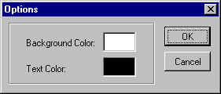

There are lots of request on tutorials about RichEdit controls. Finally I have played with it enough to think I can write tutorials about it. So here it is: the first RichEdit tutorial. The tutorials will describe nearly everything there is to know about RichEdit control or at least as much as I know it. The amount of information is rather large so I divide it into several parts, this tutorial being the first part. In this tutorial, you'll learn what a RichEdit control is, how to create it and how to load/save data to/from it.
Download the example.
A richedit control can be thought of as a souped-up edit control. It provides many desirable features that are lacking from the plain simple edit control, for example, the ability to use multiple font face/size, multiple-level undo/redo, search-for-text operation, OLE-embedded objects, drag-and-drop editing support, etc. Since the richedit control has so many features, it's stored in a separate DLL. This also means that, to use it, you can't just call InitCommonControls like other common controls. You have to call LoadLibrary to load the richedit DLL.
The problem is that there are three versions of richedit control up till now. Version 1,2, and 3. The table below shows you the name of the DLL for each version.
| DLL Name | RichEdit version | Richedit Class Name |
|---|---|---|
| Riched32.dll | 1.0 | RICHEDIT |
| RichEd20.dll | 2.0 | RICHEDIT20A |
| RichEd20.dll | 3.0 | RICHEDIT20A |
You can notice that richedit version 2 and 3 use the same DLL name. They also use the same class name! This can pose a problem if you want to use specific features of richedit 3.0. Up to now, I haven't found an official method of differentiating between version 2.0 and 3.0. However, there is a workaround which works ok, I'll show you later.
.data RichEditDLL db "RichEd20.dll",0
.....
.data?
hRichEditDLL dd ?
.code
invoke LoadLibrary,addr RichEditDLL
mov hRichEditDLL,eax
......
invoke FreeLibrary,hRichEditDLL
When the richedit dll is loaded, it registers the RichEdit window class. Thus it's imperative that you load the DLL before you create the control. The names of the richedit control classes are also different. Now you may have a question: how do I know which version of richedit control should I use? Using the latest version is not always appropriate if you don't require the extra features. So below is the table that shows the features provided by each version of richedit control.
| Feature | Version 1.0 | Version 2.0 | Version 3.0 |
|---|---|---|---|
| selection bar |
x
|
x
|
x
|
| unicode editing |
x
|
x
|
|
| character/paragraph formatting |
x
|
x
|
x
|
| search for text |
forward
|
forward/backward
|
forward/backward
|
| OLE embedding |
x
|
x
|
x
|
| Drag and drop editing |
x
|
x
|
x
|
| Undo/Redo |
single-level
|
multi-level
|
multi-level
|
| automatic URL recognition |
x
|
x
|
|
| Accelerator key support |
x
|
x
|
|
| Windowless operation |
x
|
x
|
|
| Line break |
CRLF
|
CR only
|
CR only (can emulate
version 1.0)
|
| Zoom |
x
|
||
| Paragraph numbering |
x
|
||
| simple table |
x
|
||
| normal and heading styles |
x
|
||
| underline coloring |
x
|
||
| hidden text |
x
|
||
| font binding |
x
|
The above table is by no means comprehensive: I only list the important features.
After loading the richedit dll, you can call CreateWindowEx to create the control. You can use edit control styles and common window styles in CreateWindowEx except ES_LOWERCASE, ES_UPPERCASE and ES_OEMCONVERT.
.const RichEditID equ 300 .data RichEditDLL db "RichEd20.dll",0
RichEditClass db "RichEdit20A",0 ... .data?
hRichEditDLL dd ? hwndRichEdit dd ? .code ..... invoke LoadLibrary,addr RichEditDLL mov hRichEditDLL,eax
invoke CreateWindowEx,0,addr RichEditClass,WS_VISIBLE or ES_MULTILINE or WS_CHILD or WS_VSCROLL or WS_HSCROLL, \ CW_USEDEFAULT,CW_USEDEFAULT,CW_USEDEFAULT,CW_USEDEFAULT,hWnd,RichEditID,hInstance,0 mov hwndRichEdit,eax
You may have the problem with setting text color and the background color of the edit control. But this problem has been remedy in richedit control. To set the background color of the richedit control, you send EM_SETBKGNDCOLOR to the richedit control. This message has the following syntax.
wParam
== color option. The value of 0 in this parameter specifies that Windows uses
the color value in lParam as the background
color. If this value is nonzero, Windows uses the Windows system background
color. Since we send this message to change the background color, we must pass
0 in wParam.
lParam == specifies the COLORREF
structure of the color you want to set if wParam is 0.
For example, if I want to set the background color to pure blue, I would issue this following line:
invoke SendMessage,hwndRichEdit,EM_SETBKGNDCOLOR,0,0FF0000h
To set the text color, richedit control provides another new message, EM_SETCHARFORMAT, for the job. This message controls the text formatting of a range to characters in selection or all text in the control. This message has the following syntax:
wParam == formatting options:
| SCF_ALL | The operation affects all text in the control. |
| SCF_SELECTION | The operation affects only the text in selection |
| SCF_WORD or SCF_SELECTION | Affects the word in selection. If the selection is empy, ie, only the caret is in the word, the operation affects that word. SCF_WORD flag must be used with SCF_SELECTION. |
lParam == pointer to a CHARFORMAT or CHARFORMAT2 structure that specifies the text formatting to be applied. CHARFORMAT2 is available for richedit 2.0 and above only. This doesn't mean that you must use CHARFORMAT2 with RichEdit 2.0 or above. You can still use CHARFORMAT if the added features in CHARFORMAT2 are not necessary for your need.
CHARFORMATA STRUCT cbSize DWORD ? dwMask DWORD ? dwEffects DWORD ? yHeight DWORD ? yOffset DWORD ? crTextColor COLORREF ? bCharSet BYTE ? bPitchAndFamily BYTE ? szFaceName BYTE LF_FACESIZE dup(?) _wPad2 WORD ? CHARFORMATA ENDS
| Field Name | Description | ||||||||||||||||||||
|---|---|---|---|---|---|---|---|---|---|---|---|---|---|---|---|---|---|---|---|---|---|
| cbSize | The size of the structure. RichEdit control uses this field to determine the version of the structure whether it is CHARFORMAT or CHARFORMAT2 | ||||||||||||||||||||
| dwMask |
Bit flags that determine which of the following members are valid.
|
||||||||||||||||||||
| dwEffects |
The character effects. Can be the combination of the following values
|
||||||||||||||||||||
| yHeight | Character height, in twips (1/1440 of an inch or 1/20 of a printer's point). | ||||||||||||||||||||
| yOffset | Character offset, in twips, from the baseline. If the value of this member is positive, the character is a superscript; if it is negative, the character is a subscript. | ||||||||||||||||||||
| crTextColor | Text color. This member is ignored if the CFE_AUTOCOLOR character effect is specified. | ||||||||||||||||||||
| bCharSet | Character set value | ||||||||||||||||||||
| bPitchAndFamily | Font family and pitch. | ||||||||||||||||||||
| szFaceName | Null-terminated character array specifying the font name | ||||||||||||||||||||
| _wPad2 | Padding |
From examination of the structure, you'll see that we can change the text effects (bold,italic, strikeout,underline), text color (crTextColor) and font face/size/character set. A notable flag is CFE_RPOTECTED. The text with this flag is marked as protected which means that when the user tries to modify it, EN_PROTECTED notification message will be sent to the parent window. And you can allow the change to happen or not.
CHARFORMAT2 adds more text styles such as font weight, spacing,text background color, kerning, etc. If you don't need these extra features, simply use CHARFORMAT.
To set text formatting, you have to think about the range of text you want to apply to. Richedit control introduces the notion of character text range. Richedit control gives each character a number starting from 0: the first characterin the control has Id of 0, the second character 1 and so on. To specify a text range, you must give the richedit control two numbers: the IDs of the first and the last character of the range. To apply the text formatting with EM_SETCHARFORMAT, you have at most three choices:
The first and the second choices are straightforward. The last choice requires a little explanation. If the current selection only covers one or more of the characters in the word but not the whole word, specifying the flag SCF_WORD+SCF_SELECTION applies the text formatting to the whole word. Even if there is no current selection, ie, only the caret is positioned in the word, the third choice also applies the text formatting to the whole word.
To use EM_SETCHARFORMAT, you need to fill several members of CHARFORMAT (or CHARFORMAT2) structure. For example, if we want to set the text color, we will fill the CHARFORMAT structure as follows:
.data? cf CHARFORMAT <> .... .code mov cf.cbSize,sizeof cf mov cf.dwMask,CFM_COLOR mov cf.crTextColor,0FF0000h invoke SendMessage,hwndRichEdit,EM_SETCHARFORMAT,SCF_ALL,addr cf
The above code snippet sets the text color of
the richedit control to pure blue. Note that if there is no text in the richedit
control when EM_SETCHARFORMAT is issued,
the text entered into the richedit control following the message will use the
text formatting specified by the EM_SETCHARFORMAT
message.
For those of you who are used to edit control, you'll surely be familiar with WM_GETTEXT/WM_SETTEXT as the means to set the text/get the text to/from the control. This method still works with richedit control but may not be efficient if the file is large. Edit control limits the text that can be entered into it to 64K but richedit control can accept text much larger than that. It would be very cumbersome to allocate a very large block of memory (such as 10 MB or so) to receive the text from WM_GETTEXT. Richedit control offers a new approach to this method, ie. text streaming.
To put it simply, you provide the address of a callback function to the richedit control. And richedit control will call that callback, passing the address of the buffer to it, when it's ready. The callback will fill the buffer with the data it wants to send to the control or read the data from the buffer and then waits for the next call until the operation is finished. This paradigm is used for both streaming in (setting the text) and streaming out (getting the text out of the control). You'll see that this method is more efficient: the buffer is provided by the richedit control itself so the data are divided into chunks. The operations involve two messages: EM_STREAMIN and EM_STREAMOUT
Both EM_STREAMIN and EM_STREAMOUT use the same syntax:
wParam == formatting options.
| SF_RTF | The data is in the rich-text format (RTF) |
| SF_TEXT | The data is in the plain text format |
| SFF_PLAINRTF | Only the keywords common to all languages are streamed in. |
| SFF_SELECTION | If specified, the target of the operation is the text currently in selection. If you stream the text in, the text replaces the current selection. If you stream the text out, only the text currently in selection is streamed out. If this flag is not specified, the operation affects the whole text in the control. |
| SF_UNICODE | (Available on RichEdit 2.0 or later) Specify the unicode text. |
lParam == point to an EDITSTREAM structure which has the following definition:
EDITSTREAM STRUCT dwCookie DWORD ? dwError DWORD ? pfnCallback DWORD ? EDITSTREAM ENDS
| dwCookie | application-defined value that will be passed to the callback function speficied in pfnCallback member below. We normally pass some important value to the callback function such as the file handle to use in the stream-in/out procedure. |
| dwError | Indicates the results of the stream-in (read) or stream-out (write) operation. A value of zero indicates no error. A nonzero value can be the return value of the EditStreamCallback function or a code indicating that the control encountered an error. |
| pfnCallback | Pointer to an EditStreamCallback function, which is an application-defined function that the control calls to transfer data. The control calls the callback function repeatedly, transferring a portion of the data with each call |
The editstream callback function has the following definition:
EditStreamCallback proto dwCookie:DWORD,
pBuffer:DWORD, NumBytes:DWORD, pBytesTransferred:DWORD
You have to create a function with the above prototype in your program. And then pass its address to EM_STREAMIN or EM_STREAMOUT via EDITSTREAM structure.
For stream-in operation (settting the text in the richedit control):
dwCookie: the application-defined value you pass to EM_STREAMIN via EDITSTREAM structure. We almost always pass the file handle of the file we want to set its content to the control here. pBuffer: points to the buffer provided by the richedit control that will receive the text from your callback function. NumBytes: the maximum number of bytes you can write the the buffer (pBuffer) in this call. You MUST always obey this limit, ie, you can send less data than the value in NumBytes but must not send more data than this value. You can think of this value as the size of the buffer in pBuffer. pBytesTransferred: points to a dword that you must set the value indicating the number of bytes you actually transferred to the buffer. This value is usually identical to the value in NumBytes. The exception is when the data is to send is less than the size of the buffer provided such as when the end of file is reached.
For stream-out operation (getting the text out of the richedit control):
dwCookie: Same as the stream-in operation. We usually pass the file handle we want to write the data to in this parameter. pBuffer: points to the buffer provided by the richedit control that is filled with the data from the richedit control. To obtain its size, you must examine the value of NumBytes. NumBytes: the size of the data in the buffer pointed to by pBuffer. pBytesTransferred: points to a dword that you must set the value indicating the number of bytes you actually read from the buffer.
The callback function returns 0 to indicate success and richedit control will continue calling the callback function if there is still data left to read/write. If some error occurs during the process and you want to stop the operation, returns a non-zero value and the richedit control will discard the data pointed to by pBuffer. The error/success value will be filled in the dwError field of EDITSTREAM so you can examine the error/success status of the stream operation after SendMessage returns.
The example below is a simple editor which you can open an asm source code file, edit and save it. It uses RichEdit control version 2.0 or above.
.386
.model flat,stdcall
option casemap:none
include \masm32\include\windows.inc
include \masm32\include\user32.inc
include \masm32\include\comdlg32.inc
include \masm32\include\gdi32.inc
include \masm32\include\kernel32.inc
includelib \masm32\lib\gdi32.lib
includelib \masm32\lib\comdlg32.lib
includelib \masm32\lib\user32.lib
includelib \masm32\lib\kernel32.lib
WinMain proto :DWORD,:DWORD,:DWORD,:DWORD
.const
IDR_MAINMENU equ 101
IDM_OPEN equ 40001
IDM_SAVE equ 40002
IDM_CLOSE equ 40003
IDM_SAVEAS equ 40004
IDM_EXIT equ 40005
IDM_COPY equ 40006
IDM_CUT equ 40007
IDM_PASTE equ 40008
IDM_DELETE equ 40009
IDM_SELECTALL equ 40010
IDM_OPTION equ 40011
IDM_UNDO equ 40012
IDM_REDO equ 40013
IDD_OPTIONDLG equ 101
IDC_BACKCOLORBOX equ 1000
IDC_TEXTCOLORBOX equ 1001
RichEditID equ 300
.data
ClassName db "IczEditClass",0
AppName db "IczEdit version 1.0",0
RichEditDLL db "riched20.dll",0
RichEditClass db "RichEdit20A",0
NoRichEdit db "Cannot find riched20.dll",0
ASMFilterString db "ASM Source code (*.asm)",0,"*.asm",0
db "All Files (*.*)",0,"*.*",0,0
OpenFileFail db "Cannot open the file",0
WannaSave db "The data in the control is modified. Want to save it?",0
FileOpened dd FALSE
BackgroundColor dd 0FFFFFFh ; default to white
TextColor dd 0 ; default to black
.data?
hInstance dd ?
hRichEdit dd ?
hwndRichEdit dd ?
FileName db 256 dup(?)
AlternateFileName db 256 dup(?)
CustomColors dd 16 dup(?)
.code
start:
invoke GetModuleHandle, NULL
mov hInstance,eax
invoke LoadLibrary,addr RichEditDLL
.if eax!=0
mov hRichEdit,eax
invoke WinMain, hInstance,0,0, SW_SHOWDEFAULT
invoke FreeLibrary,hRichEdit
.else
invoke MessageBox,0,addr NoRichEdit,addr AppName,MB_OK or MB_ICONERROR
.endif
invoke ExitProcess,eax
WinMain proc hInst:DWORD,hPrevInst:DWORD,CmdLine:DWORD,CmdShow:DWORD
LOCAL wc:WNDCLASSEX
LOCAL msg:MSG
LOCAL hwnd:DWORD
mov wc.cbSize,SIZEOF WNDCLASSEX
mov wc.style, CS_HREDRAW or CS_VREDRAW
mov wc.lpfnWndProc, OFFSET WndProc
mov wc.cbClsExtra,NULL
mov wc.cbWndExtra,NULL
push hInst
pop wc.hInstance
mov wc.hbrBackground,COLOR_WINDOW+1
mov wc.lpszMenuName,IDR_MAINMENU
mov wc.lpszClassName,OFFSET ClassName
invoke LoadIcon,NULL,IDI_APPLICATION
mov wc.hIcon,eax
mov wc.hIconSm,eax
invoke LoadCursor,NULL,IDC_ARROW
mov wc.hCursor,eax
invoke RegisterClassEx, addr wc
INVOKE CreateWindowEx,NULL,ADDR ClassName,ADDR AppName,\
WS_OVERLAPPEDWINDOW,CW_USEDEFAULT,\
CW_USEDEFAULT,CW_USEDEFAULT,CW_USEDEFAULT,NULL,NULL,\
hInst,NULL
mov hwnd,eax
invoke ShowWindow, hwnd,SW_SHOWNORMAL
invoke UpdateWindow, hwnd
.while TRUE
invoke GetMessage, ADDR msg,0,0,0
.break .if (!eax)
invoke TranslateMessage, ADDR msg
invoke DispatchMessage, ADDR msg
.endw
mov eax,msg.wParam
ret
WinMain endp
StreamInProc proc hFile:DWORD,pBuffer:DWORD, NumBytes:DWORD, pBytesRead:DWORD
invoke ReadFile,hFile,pBuffer,NumBytes,pBytesRead,0
xor eax,1
ret
StreamInProc endp
StreamOutProc proc hFile:DWORD,pBuffer:DWORD, NumBytes:DWORD, pBytesWritten:DWORD
invoke WriteFile,hFile,pBuffer,NumBytes,pBytesWritten,0
xor eax,1
ret
StreamOutProc endp
CheckModifyState proc hWnd:DWORD
invoke SendMessage,hwndRichEdit,EM_GETMODIFY,0,0
.if eax!=0
invoke MessageBox,hWnd,addr WannaSave,addr AppName,MB_YESNOCANCEL
.if eax==IDYES
invoke SendMessage,hWnd,WM_COMMAND,IDM_SAVE,0
.elseif eax==IDCANCEL
mov eax,FALSE
ret
.endif
.endif
mov eax,TRUE
ret
CheckModifyState endp
SetColor proc
LOCAL cfm:CHARFORMAT
invoke SendMessage,hwndRichEdit,EM_SETBKGNDCOLOR,0,BackgroundColor
invoke RtlZeroMemory,addr cfm,sizeof cfm
mov cfm.cbSize,sizeof cfm
mov cfm.dwMask,CFM_COLOR
push TextColor
pop cfm.crTextColor
invoke SendMessage,hwndRichEdit,EM_SETCHARFORMAT,SCF_ALL,addr cfm
ret
SetColor endp
OptionProc proc hWnd:DWORD, uMsg:DWORD, wParam:DWORD, lParam:DWORD
LOCAL clr:CHOOSECOLOR
.if uMsg==WM_INITDIALOG
.elseif uMsg==WM_COMMAND
mov eax,wParam
shr eax,16
.if ax==BN_CLICKED
mov eax,wParam
.if ax==IDCANCEL
invoke SendMessage,hWnd,WM_CLOSE,0,0
.elseif ax==IDC_BACKCOLORBOX
invoke RtlZeroMemory,addr clr,sizeof clr
mov clr.lStructSize,sizeof clr
push hWnd
pop clr.hwndOwner
push hInstance
pop clr.hInstance
push BackgroundColor
pop clr.rgbResult
mov clr.lpCustColors,offset CustomColors
mov clr.Flags,CC_ANYCOLOR or CC_RGBINIT
invoke ChooseColor,addr clr
.if eax!=0
push clr.rgbResult
pop BackgroundColor
invoke GetDlgItem,hWnd,IDC_BACKCOLORBOX
invoke InvalidateRect,eax,0,TRUE
.endif
.elseif ax==IDC_TEXTCOLORBOX
invoke RtlZeroMemory,addr clr,sizeof clr
mov clr.lStructSize,sizeof clr
push hWnd
pop clr.hwndOwner
push hInstance
pop clr.hInstance
push TextColor
pop clr.rgbResult
mov clr.lpCustColors,offset CustomColors
mov clr.Flags,CC_ANYCOLOR or CC_RGBINIT
invoke ChooseColor,addr clr
.if eax!=0
push clr.rgbResult
pop TextColor
invoke GetDlgItem,hWnd,IDC_TEXTCOLORBOX
invoke InvalidateRect,eax,0,TRUE
.endif
.elseif ax==IDOK
;==================================================================================
; Save the modify state of the richedit control because changing the text color changes the
; modify state of the richedit control.
;==================================================================================
invoke SendMessage,hwndRichEdit,EM_GETMODIFY,0,0
push eax
invoke SetColor
pop eax
invoke SendMessage,hwndRichEdit,EM_SETMODIFY,eax,0
invoke EndDialog,hWnd,0
.endif
.endif
.elseif uMsg==WM_CTLCOLORSTATIC
invoke GetDlgItem,hWnd,IDC_BACKCOLORBOX
.if eax==lParam
invoke CreateSolidBrush,BackgroundColor
ret
.else
invoke GetDlgItem,hWnd,IDC_TEXTCOLORBOX
.if eax==lParam
invoke CreateSolidBrush,TextColor
ret
.endif
.endif
mov eax,FALSE
ret
.elseif uMsg==WM_CLOSE
invoke EndDialog,hWnd,0
.else
mov eax,FALSE
ret
.endif
mov eax,TRUE
ret
OptionProc endp
WndProc proc hWnd:DWORD, uMsg:DWORD, wParam:DWORD, lParam:DWORD
LOCAL chrg:CHARRANGE
LOCAL ofn:OPENFILENAME
LOCAL buffer[256]:BYTE
LOCAL editstream:EDITSTREAM
LOCAL hFile:DWORD
.if uMsg==WM_CREATE
invoke CreateWindowEx,WS_EX_CLIENTEDGE,addr RichEditClass,0,WS_CHILD or WS_VISIBLE or ES_MULTILINE or WS_VSCROLL or WS_HSCROLL or ES_NOHIDESEL,\
CW_USEDEFAULT,CW_USEDEFAULT, CW_USEDEFAULT, CW_USEDEFAULT,hWnd,RichEditID,hInstance,0
mov hwndRichEdit,eax
;=============================================================
; Set the text limit. The default is 64K
;=============================================================
invoke SendMessage,hwndRichEdit,EM_LIMITTEXT,-1,0
;=============================================================
; Set the default text/background color
;=============================================================
invoke SetColor
invoke SendMessage,hwndRichEdit,EM_SETMODIFY,FALSE,0
invoke SendMessage,hwndRichEdit,EM_EMPTYUNDOBUFFER,0,0
.elseif uMsg==WM_INITMENUPOPUP
mov eax,lParam
.if ax==0 ; file menu
.if FileOpened==TRUE ; a file is already opened
invoke EnableMenuItem,wParam,IDM_OPEN,MF_GRAYED
invoke EnableMenuItem,wParam,IDM_CLOSE,MF_ENABLED
invoke EnableMenuItem,wParam,IDM_SAVE,MF_ENABLED
invoke EnableMenuItem,wParam,IDM_SAVEAS,MF_ENABLED
.else
invoke EnableMenuItem,wParam,IDM_OPEN,MF_ENABLED
invoke EnableMenuItem,wParam,IDM_CLOSE,MF_GRAYED
invoke EnableMenuItem,wParam,IDM_SAVE,MF_GRAYED
invoke EnableMenuItem,wParam,IDM_SAVEAS,MF_GRAYED
.endif
.elseif ax==1 ; edit menu
;=============================================================================
; Check whether there is some text in the clipboard. If so, we enable the paste menuitem
;=============================================================================
invoke SendMessage,hwndRichEdit,EM_CANPASTE,CF_TEXT,0
.if eax==0 ; no text in the clipboard
invoke EnableMenuItem,wParam,IDM_PASTE,MF_GRAYED
.else
invoke EnableMenuItem,wParam,IDM_PASTE,MF_ENABLED
.endif
;==========================================================
; check whether the undo queue is empty
;==========================================================
invoke SendMessage,hwndRichEdit,EM_CANUNDO,0,0
.if eax==0
invoke EnableMenuItem,wParam,IDM_UNDO,MF_GRAYED
.else
invoke EnableMenuItem,wParam,IDM_UNDO,MF_ENABLED
.endif
;=========================================================
; check whether the redo queue is empty
;=========================================================
invoke SendMessage,hwndRichEdit,EM_CANREDO,0,0
.if eax==0
invoke EnableMenuItem,wParam,IDM_REDO,MF_GRAYED
.else
invoke EnableMenuItem,wParam,IDM_REDO,MF_ENABLED
.endif
;=========================================================
; check whether there is a current selection in the richedit control.
; If there is, we enable the cut/copy/delete menuitem
;=========================================================
invoke SendMessage,hwndRichEdit,EM_EXGETSEL,0,addr chrg
mov eax,chrg.cpMin
.if eax==chrg.cpMax ; no current selection
invoke EnableMenuItem,wParam,IDM_COPY,MF_GRAYED
invoke EnableMenuItem,wParam,IDM_CUT,MF_GRAYED
invoke EnableMenuItem,wParam,IDM_DELETE,MF_GRAYED
.else
invoke EnableMenuItem,wParam,IDM_COPY,MF_ENABLED
invoke EnableMenuItem,wParam,IDM_CUT,MF_ENABLED
invoke EnableMenuItem,wParam,IDM_DELETE,MF_ENABLED
.endif
.endif
.elseif uMsg==WM_COMMAND
.if lParam==0 ; menu commands
mov eax,wParam
.if ax==IDM_OPEN
invoke RtlZeroMemory,addr ofn,sizeof ofn
mov ofn.lStructSize,sizeof ofn
push hWnd
pop ofn.hwndOwner
push hInstance
pop ofn.hInstance
mov ofn.lpstrFilter,offset ASMFilterString
mov ofn.lpstrFile,offset FileName
mov byte ptr [FileName],0
mov ofn.nMaxFile,sizeof FileName
mov ofn.Flags,OFN_FILEMUSTEXIST or OFN_HIDEREADONLY or OFN_PATHMUSTEXIST
invoke GetOpenFileName,addr ofn
.if eax!=0
invoke CreateFile,addr FileName,GENERIC_READ,FILE_SHARE_READ,NULL,OPEN_EXISTING,FILE_ATTRIBUTE_NORMAL,0
.if eax!=INVALID_HANDLE_VALUE
mov hFile,eax
;================================================================
; stream the text into the richedit control
;================================================================
mov editstream.dwCookie,eax
mov editstream.pfnCallback,offset StreamInProc
invoke SendMessage,hwndRichEdit,EM_STREAMIN,SF_TEXT,addr editstream
;==========================================================
; Initialize the modify state to false
;==========================================================
invoke SendMessage,hwndRichEdit,EM_SETMODIFY,FALSE,0
invoke CloseHandle,hFile
mov FileOpened,TRUE
.else
invoke MessageBox,hWnd,addr OpenFileFail,addr AppName,MB_OK or MB_ICONERROR
.endif
.endif
.elseif ax==IDM_CLOSE
invoke CheckModifyState,hWnd
.if eax==TRUE
invoke SetWindowText,hwndRichEdit,0
mov FileOpened,FALSE
.endif
.elseif ax==IDM_SAVE
invoke CreateFile,addr FileName,GENERIC_WRITE,FILE_SHARE_READ,NULL,CREATE_ALWAYS,FILE_ATTRIBUTE_NORMAL,0
.if eax!=INVALID_HANDLE_VALUE
@@:
mov hFile,eax
;================================================================
; stream the text to the file
;================================================================
mov editstream.dwCookie,eax
mov editstream.pfnCallback,offset StreamOutProc
invoke SendMessage,hwndRichEdit,EM_STREAMOUT,SF_TEXT,addr editstream
;==========================================================
; Initialize the modify state to false
;==========================================================
invoke SendMessage,hwndRichEdit,EM_SETMODIFY,FALSE,0
invoke CloseHandle,hFile
.else
invoke MessageBox,hWnd,addr OpenFileFail,addr AppName,MB_OK or MB_ICONERROR
.endif
.elseif ax==IDM_COPY
invoke SendMessage,hwndRichEdit,WM_COPY,0,0
.elseif ax==IDM_CUT
invoke SendMessage,hwndRichEdit,WM_CUT,0,0
.elseif ax==IDM_PASTE
invoke SendMessage,hwndRichEdit,WM_PASTE,0,0
.elseif ax==IDM_DELETE
invoke SendMessage,hwndRichEdit,EM_REPLACESEL,TRUE,0
.elseif ax==IDM_SELECTALL
mov chrg.cpMin,0
mov chrg.cpMax,-1
invoke SendMessage,hwndRichEdit,EM_EXSETSEL,0,addr chrg
.elseif ax==IDM_UNDO
invoke SendMessage,hwndRichEdit,EM_UNDO,0,0
.elseif ax==IDM_REDO
invoke SendMessage,hwndRichEdit,EM_REDO,0,0
.elseif ax==IDM_OPTION
invoke DialogBoxParam,hInstance,IDD_OPTIONDLG,hWnd,addr OptionProc,0
.elseif ax==IDM_SAVEAS
invoke RtlZeroMemory,addr ofn,sizeof ofn
mov ofn.lStructSize,sizeof ofn
push hWnd
pop ofn.hwndOwner
push hInstance
pop ofn.hInstance
mov ofn.lpstrFilter,offset ASMFilterString
mov ofn.lpstrFile,offset AlternateFileName
mov byte ptr [AlternateFileName],0
mov ofn.nMaxFile,sizeof AlternateFileName
mov ofn.Flags,OFN_FILEMUSTEXIST or OFN_HIDEREADONLY or OFN_PATHMUSTEXIST
invoke GetSaveFileName,addr ofn
.if eax!=0
invoke CreateFile,addr AlternateFileName,GENERIC_WRITE,FILE_SHARE_READ,NULL,CREATE_ALWAYS,FILE_ATTRIBUTE_NORMAL,0
.if eax!=INVALID_HANDLE_VALUE
jmp @B
.endif
.endif
.elseif ax==IDM_EXIT
invoke SendMessage,hWnd,WM_CLOSE,0,0
.endif
.endif
.elseif uMsg==WM_CLOSE
invoke CheckModifyState,hWnd
.if eax==TRUE
invoke DestroyWindow,hWnd
.endif
.elseif uMsg==WM_SIZE
mov eax,lParam
mov edx,eax
and eax,0FFFFh
shr edx,16
invoke MoveWindow,hwndRichEdit,0,0,eax,edx,TRUE
.elseif uMsg==WM_DESTROY
invoke PostQuitMessage,NULL
.else
invoke DefWindowProc,hWnd,uMsg,wParam,lParam
ret
.endif
xor eax,eax
ret
WndProc endp
end start
;===================================================================
; The resource file
;===================================================================
#include "resource.h"
#define IDR_MAINMENU 101
#define IDD_OPTIONDLG 101
#define IDC_BACKCOLORBOX 1000
#define IDC_TEXTCOLORBOX 1001
#define IDM_OPEN 40001
#define IDM_SAVE 40002
#define IDM_CLOSE 40003
#define IDM_SAVEAS 40004
#define IDM_EXIT 40005
#define IDM_COPY 40006
#define IDM_CUT 40007
#define IDM_PASTE 40008
#define IDM_DELETE 40009
#define IDM_SELECTALL 40010
#define IDM_OPTION 40011
#define IDM_UNDO 40012
#define IDM_REDO 40013
IDR_MAINMENU MENU DISCARDABLE
BEGIN
POPUP "&File"
BEGIN
MENUITEM "&Open", IDM_OPEN
MENUITEM "&Close", IDM_CLOSE
MENUITEM "&Save", IDM_SAVE
MENUITEM "Save &As", IDM_SAVEAS
MENUITEM SEPARATOR
MENUITEM "E&xit", IDM_EXIT
END
POPUP "&Edit"
BEGIN
MENUITEM "&Undo", IDM_UNDO
MENUITEM "&Redo", IDM_REDO
MENUITEM "&Copy", IDM_COPY
MENUITEM "C&ut", IDM_CUT
MENUITEM "&Paste", IDM_PASTE
MENUITEM SEPARATOR
MENUITEM "&Delete", IDM_DELETE
MENUITEM SEPARATOR
MENUITEM "Select &All", IDM_SELECTALL
END
MENUITEM "Options", IDM_OPTION
END
IDD_OPTIONDLG DIALOG DISCARDABLE 0, 0, 183, 54
STYLE DS_MODALFRAME | WS_POPUP | WS_VISIBLE | WS_CAPTION | WS_SYSMENU | DS_CENTER
CAPTION "Options"
FONT 8, "MS Sans Serif"
BEGIN
DEFPUSHBUTTON "OK",IDOK,137,7,39,14
PUSHBUTTON "Cancel",IDCANCEL,137,25,39,14
GROUPBOX "",IDC_STATIC,5,0,124,49
LTEXT "Background Color:",IDC_STATIC,20,14,60,8
LTEXT "",IDC_BACKCOLORBOX,85,11,28,14,SS_NOTIFY | WS_BORDER
LTEXT "Text Color:",IDC_STATIC,20,33,35,8
LTEXT "",IDC_TEXTCOLORBOX,85,29,28,14,SS_NOTIFY | WS_BORDER
END
The program first loads the richedit
dll, which in this case is riched20.dll. If the dll cannot be loaded, it exits
to Windows.
invoke LoadLibrary,addr RichEditDLL .if eax!=0 mov hRichEdit,eax invoke WinMain,hInstance,0,0, SW_SHOWDEFAULT invoke FreeLibrary,hRichEdit .else invoke MessageBox,0,addr NoRichEdit,addr AppName,MB_OK or MB_ICONERROR .endif invoke ExitProcess,eax
After the dll is loaded successfully, we proceed to create a normal window which will be the parent of the richedit control. Within the WM_CREATE handler, we create the richedit control:
invoke CreateWindowEx,WS_EX_CLIENTEDGE,addr RichEditClass,0,WS_CHILD or WS_VISIBLE or ES_MULTILINE or WS_VSCROLL or WS_HSCROLL or ES_NOHIDESEL,\ CW_USEDEFAULT,CW_USEDEFAULT, CW_USEDEFAULT, CW_USEDEFAULT,hWnd,RichEditID,hInstance,0 mov hwndRichEdit,eax
Note that we specify
ES_MULTILINE style else the control will be a single-lined one.
invoke SendMessage,hwndRichEdit,EM_LIMITTEXT,-1,0
After the richedit control is created, we must set the new text limit on it. By default, the richedit control has 64K text limit, the same as a simple multi-line edit control. We must extend this limit to allow it to operate with larger files. In the above line, I specify -1 which amounts to 0FFFFFFFFh, a very large value.
invoke SetColor
Next, we set the text/background color.
Since this operation can be performed in other part of the program, I put the
code in a function named SetColor.
SetColor proc LOCAL cfm:CHARFORMAT invoke SendMessage,hwndRichEdit,EM_SETBKGNDCOLOR,0,BackgroundColor
Setting the background color of
the richedit control is a straightforward operation: just send EM_SETBKGNDCOLOR
message to the richedit control. (If you use a multi-line edit control, you
have to process WM_CTLCOLOREDIT). The default
background color is white.
invoke RtlZeroMemory,addr cfm,sizeof cfm mov cfm.cbSize,sizeof cfm mov cfm.dwMask,CFM_COLOR push TextColor pop cfm.crTextColor
After the background color is set, we fill in the members of CHARFORMAT in order to set the text color. Note that we fill cbSize with the size of the structure so the richedit control knows we are sending it CHARFORMAT, not CHARFORMAT2. dwMask has only one flag, CFM_COLOR, because we only want to set the text color and crTextColor is filled with the value of the desired text color.
invoke SendMessage,hwndRichEdit,EM_SETCHARFORMAT,SCF_ALL,addr cfm ret SetColor endp
After settting the color, you have to empty undo buffer simply because the act of changing text/background color is undo-able. We send EM_EMPTYUNDOBUFFER message to achieve this.
invoke SendMessage,hwndRichEdit,EM_EMPTYUNDOBUFFER,0,0
After filling the CHARFORMAT structure, we send EM_SETCHARFORMAT to the richedit control, specifying SCF_ALL flag in wParam to indicate that we want the text formatting to be applied to all text in the control.
Note that when we first created the richedit control, we didn't specify its size/position at that time. That's because we want it to cover the whole client area of the parent window. We resize it whenever the size of the parent window changes.
.elseif uMsg==WM_SIZE mov eax,lParam mov edx,eax and eax,0FFFFh shr edx,16 invoke MoveWindow,hwndRichEdit,0,0,eax,edx,TRUE
In the above code snippet, we use the new dimension of the client area passed in lParam to resize the richedit control with MoveWindow.
When the user clicks on the File/Edit menu bar, we process WM_INITPOPUPMENU so that we can prepare the states of the menuitems in the submenu before displaying it to the user. For example, if a file is already opened in the richedit control, we want to disable the open menuitem and enable all the remaining menuitems.
In the case of the File menu bar, we use the variable FileOpened as the flag to determine whether a file is already opened. If the value in this variable is TRUE, we know that a file is already opened.
.elseif uMsg==WM_INITMENUPOPUP mov eax,lParam .if ax==0 ; file menu .if FileOpened==TRUE ; a file is already opened invoke EnableMenuItem,wParam,IDM_OPEN,MF_GRAYED invoke EnableMenuItem,wParam,IDM_CLOSE,MF_ENABLED invoke EnableMenuItem,wParam,IDM_SAVE,MF_ENABLED invoke EnableMenuItem,wParam,IDM_SAVEAS,MF_ENABLED .else invoke EnableMenuItem,wParam,IDM_OPEN,MF_ENABLED invoke EnableMenuItem,wParam,IDM_CLOSE,MF_GRAYED invoke EnableMenuItem,wParam,IDM_SAVE,MF_GRAYED invoke EnableMenuItem,wParam,IDM_SAVEAS,MF_GRAYED .endif
As you can see, if a file is already opened, we gray out the open menuitem and enable the remaining menuitems. The reverse is true of FileOpened is false.
In the case of the edit menu bar, we need to check the state of the richedit control/clipboard first.
invoke SendMessage,hwndRichEdit,EM_CANPASTE,CF_TEXT,0 .if eax==0 ; no text in the clipboard invoke EnableMenuItem,wParam,IDM_PASTE,MF_GRAYED .else invoke EnableMenuItem,wParam,IDM_PASTE,MF_ENABLED .endif
We first check whether some text is available in the clipboard by sending EM_CANPASTE message. If some text is available, SendMessage returns TRUE and we enable the paste menuitem. If not, we gray out the menuitem.
invoke SendMessage,hwndRichEdit,EM_CANUNDO,0,0 .if eax==0 invoke EnableMenuItem,wParam,IDM_UNDO,MF_GRAYED .else invoke EnableMenuItem,wParam,IDM_UNDO,MF_ENABLED .endif
Next, we check whether the undo buffer is empty by sending EM_CANUNDO message. If it's not empty, SendMessage returns TRUE and we enable the undo menuitem.
invoke SendMessage,hwndRichEdit,EM_CANREDO,0,0 .if eax==0 invoke EnableMenuItem,wParam,IDM_REDO,MF_GRAYED .else invoke EnableMenuItem,wParam,IDM_REDO,MF_ENABLED .endif
We check the redo buffer by sending EM_CANREDO message to the richedit control. If it's not empty, SendMessage returns TRUE and we enable the redo menuitem.
invoke SendMessage,hwndRichEdit,EM_EXGETSEL,0,addr chrg mov eax,chrg.cpMin .if eax==chrg.cpMax ; no current selection invoke EnableMenuItem,wParam,IDM_COPY,MF_GRAYED invoke EnableMenuItem,wParam,IDM_CUT,MF_GRAYED invoke EnableMenuItem,wParam,IDM_DELETE,MF_GRAYED .else invoke EnableMenuItem,wParam,IDM_COPY,MF_ENABLED invoke EnableMenuItem,wParam,IDM_CUT,MF_ENABLED invoke EnableMenuItem,wParam,IDM_DELETE,MF_ENABLED .endif
Lastly, we check whether a current selection exists by sending EM_EXGETSEL message. This message uses a CHARRANGE structure which is defined as follows:
CHARRANGE STRUCT cpMin DWORD ? cpMax DWORD ? CHARRANGE ENDS
cpMin contains
the character position index immediately preceding the first character in the
range.
cpMax contains the character position immediately
following the last character in the range.
After EM_EXGETSEL returns, the CHARRANGE structure is filled with the starting-ending character position indices of the selection range. If there is no current selection, cpMin and cpMax are identical and we gray out the cut/copy/delete menuitems.
When the user clicks the Open menuitem, we display an open file dialog box and if the user selects a file, we open the file and stream its content to the richedit control.
invoke CreateFile,addr FileName,GENERIC_READ,FILE_SHARE_READ,NULL,OPEN_EXISTING,FILE_ATTRIBUTE_NORMAL,0 .if eax!=INVALID_HANDLE_VALUE mov hFile,eax mov editstream.dwCookie,eax mov editstream.pfnCallback,offset StreamInProc invoke SendMessage,hwndRichEdit,EM_STREAMIN,SF_TEXT,addr editstream
After the file is successfully opened with CreateFile, we fill the EDITSTREAM structure in preparation for EM_STREAMIN message. We choose to send the handle to the opened file via dwCookie member and pass the address of the stream callback function in pfnCallback.
The stream callback procedure itself is the essence of simplicity.
StreamInProc proc hFile:DWORD,pBuffer:DWORD, NumBytes:DWORD, pBytesRead:DWORD invoke ReadFile,hFile,pBuffer,NumBytes,pBytesRead,0 xor eax,1 ret StreamInProc endp
You can see that all parameters of the stream callback procedure fit perfectly with ReadFile. And the return value of ReadFile is xor-ed with 1 so that if it returns 1 (success), the actual value returned in eax is 0 and vice versa.
invoke SendMessage,hwndRichEdit,EM_SETMODIFY,FALSE,0 invoke CloseHandle,hFile mov FileOpened,TRUE
After EM_STREAMIN returns, it means the stream operation is completed. In reality, we must check the value of dwError member of the EDITSTREAM structure.
Richedit (and edit) control supports a flag to indicate whether its content is modified. We can obtain the value of this flag by sending EM_GETMODIFY message to the control. SendMessage returns TRUE if the content of the control was modified. Since we stream the text into the control, it's a kind of a modification. We must set the modify flag to FALSE by sending EM_SETMODIFY with wParam==FALSE to the control to start anew after the stream-in opertion is finished. We immediately close the file and set FileOpened to TRUE to indicate that a file was opened.
When the user clicks on save/saveas menuitem, we use EM_STREAMOUT message to output the content of the richedit control to a file. As with the streamin callback function, the stream-out callback function is simplicity in itself. It fits perfectly with WriteFile.
The text operations such as cut/copy/paste/redo/undo are easily implemented by sending single message to the richedit control, WM_CUT/WM_COPY/WM_PASTE/WM_REDO/WM_UNDO respectively.
The delete/select all operations are done as follows:
.elseif ax==IDM_DELETE invoke SendMessage,hwndRichEdit,EM_REPLACESEL,TRUE,0 .elseif ax==IDM_SELECTALL mov chrg.cpMin,0 mov chrg.cpMax,-1 invoke SendMessage,hwndRichEdit,EM_EXSETSEL,0,addr chrg
The delete operation affects the currently selection. I send EM_REPLACESEL message with NULL string so the richedit control will replace the currently selected text with the null string.
The select-all operation is done by sending EM_EXSETSEL message, specifying cpMin==0 and cpMax==-1 which amounts to selecting all the text.
When the user selects Option menu bar, we display a dialog box presenting the current background/text colors.

When the user clicks on one of the
color boxes, it displays the choose-color dialog box. The "color box"
is in fact a static control with SS_NOTIFY
and WS_BORDER flag. A static control with
SS_NOTIFY flag will notify its parent window
with mouse actions on it, such as BN_CLICKED
(STN_CLICKED).
That's the trick.
.elseif ax==IDC_BACKCOLORBOX invoke RtlZeroMemory,addr clr,sizeof clr mov clr.lStructSize,sizeof clr push hWnd pop clr.hwndOwner push hInstance pop clr.hInstance push BackgroundColor pop clr.rgbResult mov clr.lpCustColors,offset CustomColors mov clr.Flags,CC_ANYCOLOR or CC_RGBINIT invoke ChooseColor,addr clr .if eax!=0 push clr.rgbResult pop BackgroundColor invoke GetDlgItem,hWnd,IDC_BACKCOLORBOX invoke InvalidateRect,eax,0,TRUE .endif
When the user clicks on one of the color box, we fill the members of the CHOOSECOLOR structure and call ChooseColor to display the choose-color dialog box. If the user selects a color, the colorref value is returned in rgbResult member and we store that value in BackgroundColor variable. After that, we force a repaint on the color box by calling InvalidateRect on the handle to the color box. The color box sends WM_CTLCOLORSTATIC message to its parent window.
invoke GetDlgItem,hWnd,IDC_BACKCOLORBOX .if eax==lParam invoke CreateSolidBrush,BackgroundColor ret
Within the WM_CTLCOLORSTATIC handler, we compare the handle of the static control passed in lParam to that of both the color boxes. If the values match, we create a new brush using the color in the variable and immediately return. The static control will use the newly created brush to paint its background.